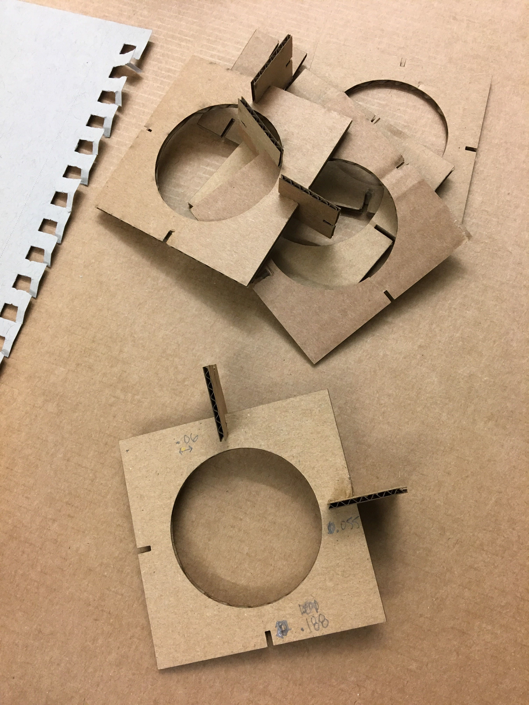

Assignment 2: CAD Model + Fabricated Output

This project continues to explore screen block patterns, popularized in mid-centery architecture, through CAD modeling.
Materials and Tools:
E flute cardboard for the connector
C flute cardboard for the base
Grasshopper
Lasercutter
Collaborators:
Julie T. Do, - Thank you for helping me learn Grasshopper
Connor Stein, M Arch - Thank you for helping with laser cutting
Step 1. Learning Grasshopper
Using the same base block pattern that I created for Assignment 1, I sought to recreate the base and connector piece in Grasshopper. This pattern was inspired by the "Domino" breeze block pattern, a single circle within a block.
I dedicated the holiday weekend to learning Grasshopper by following an online tutorial, watching (then re-watching) Nadya's Grasshopper tutorial screencapture , and working alongside my peer, Julie.
Step 2. Lasercutting
I borrowed the same base pattern from my last project, so I relied on past machine settings to ensure successful cuts. I used E flute and C flute cardboard, but the difference in thickness was not substantial enough to modify the machine settings.Iteration 1 (15% power, 7% speed) I began with the same notch measurements from my past project on the square and connector: .375" deep and .05" wide. The printed pieces did not connect together because the increased thickness of the base and the exposed corrugation got caught in the slim connector piece. Even if the pieces had fit, the connector would have overlapped the Domino pattern. This meant that I had to decrease the connector size, slot depths, and slot widths.
Iteration 2 (15% power, 7% speed) .188" long slots and .05" wide, shortened in length so that the connector does not extend into the negative space. Turns out it was still too tight, but I was satisfied with the connector's position to the base!
 Tester slots
Iteration 7 (15% power, 7% speed) .188" long slots and .060" wide. The wider slots on the square base glided smoothly into the connector slots and did not come apart when given a light shake.
With a successful prototype, I proceeded to print 9 faces and a handful of connectors, keeping spares in case they got bent in the assembly phase. Hooray!
 How satisfying is this! The connectors were cleanly cut from the cardboard and the remaining cardboard, with the negative space exposing the background, suggested a screen block pattern of its own!!
How satisfying is this! The connectors were cleanly cut from the cardboard and the remaining cardboard, with the negative space exposing the background, suggested a screen block pattern of its own!!
**Download the Grasshopper file here or the Rhino file here if you'd like to create your own cardboard breeze block screen!